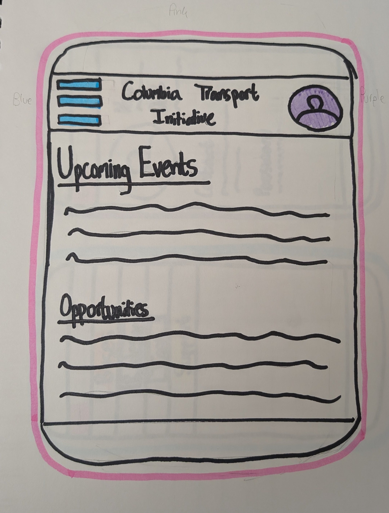
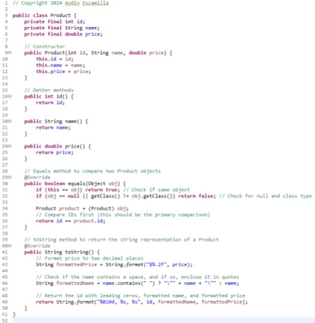

Problem Statement

There is not enough attention being placed on the lack or availability of public transportation to University of South Carolina students who may need it.
Affinity Diagram

Above is an affinity diagram created for the sake of developing a solution to my problem statement. It includes a section for outreach, sustainability, needs, barriers, and deliverables, all of which then have snippets of possibilities pertaining to their headings.
Sketches

Above you can find some sketches regarding my solution to my problem statement. You will find a detailed rough draft for a website, a less detailed draft of the web-based and mobile app functionality, and a flyer draft which would draw attention to the website.
Prototype

Above you can find a paper prototype of my mobile app solution to my problem statement, including a full commentated walkthrough of the app, illustrated on paper.
Algorithmic Design Final Homework Assignment

This repository contains nine program files written in java from my fourth and final homework assignment from Algorithmic Design I.
At the moment I have no projects with front-end elements, so the attached image is simply a screenshot of my code. These are the only code samples I have. Sorry I couldn't provide something front-end. The screenshot, more specifically, is of the highest java class in the overall program's hierarchy, Product.java.